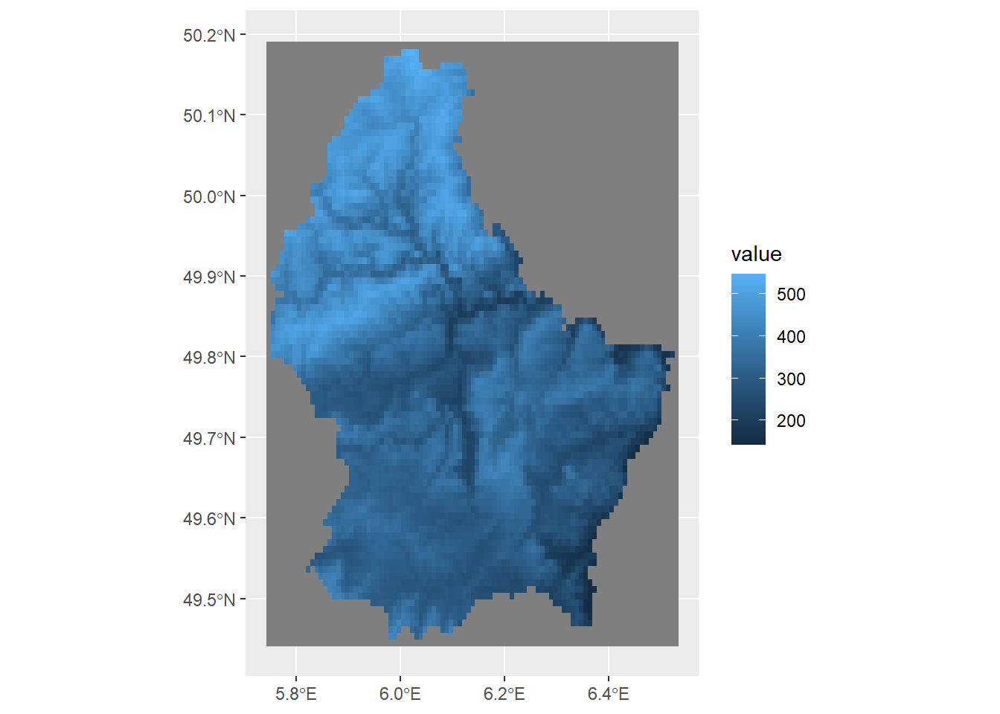
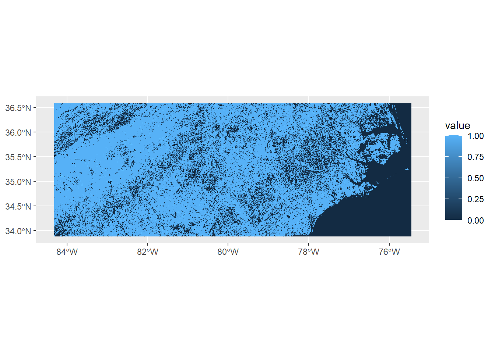
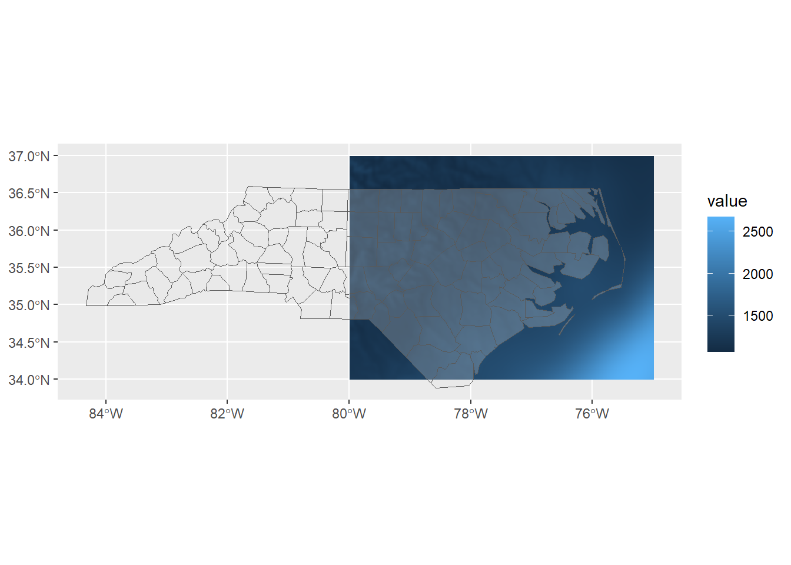
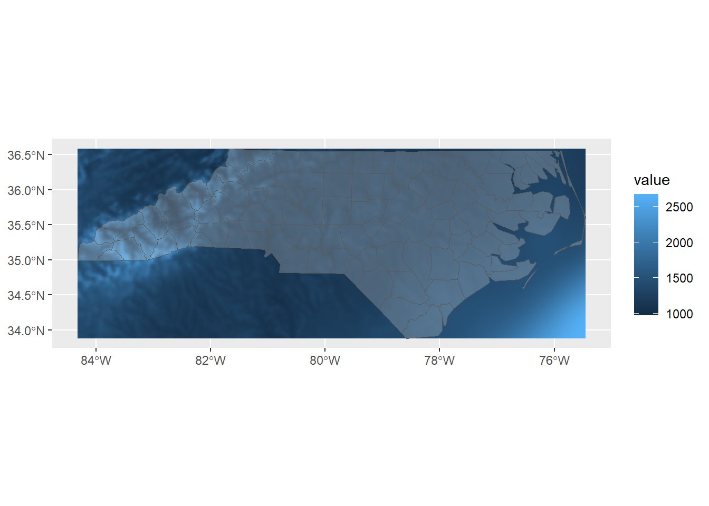
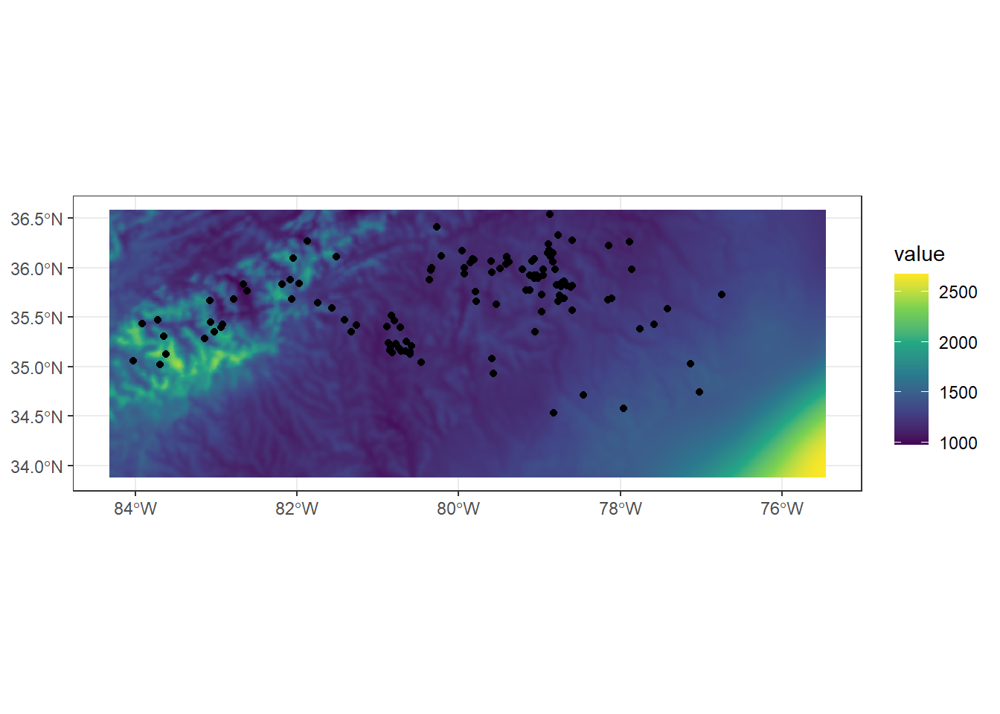
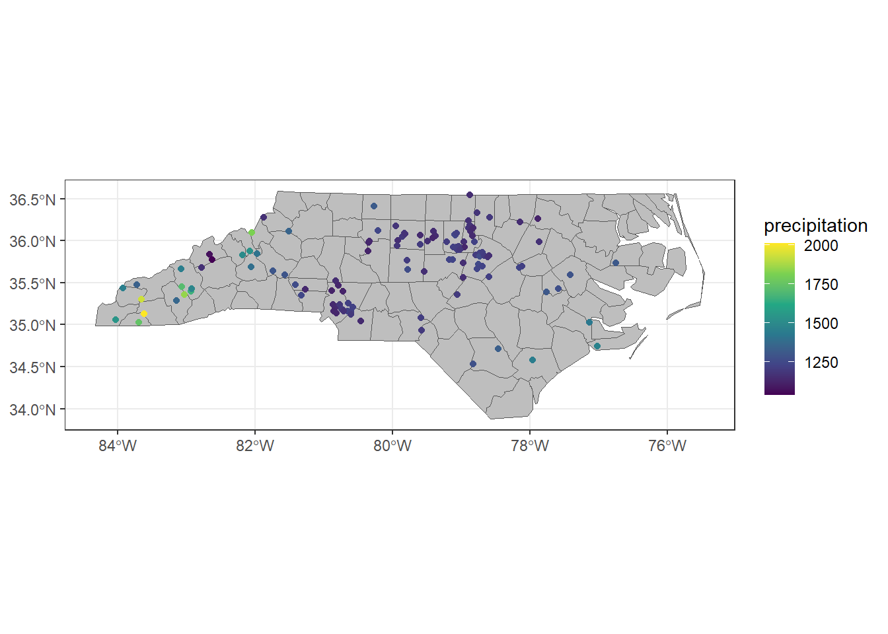
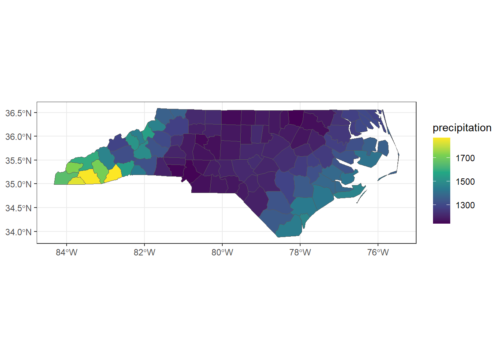

4 Raster Data (terra basics)
4.1 Learning objectives
Understand the structure and data formats of raster data
Create basic maps using raster data
Perform fundamental manipulations of raster data
In this chapter, we will work with the following packages. Before starting any exercises, make sure to run the following code.
if (!require(pacman)) install.packages("pacman")
pacman::p_load(tidyverse,
terra,
tidyterra,
mapview,
stars)4.2 Raster data in GIS
Raster data in GIS represents geographic information as a grid of pixels (or cells), where each cell has a value corresponding to a specific attribute such as elevation, temperature, or land cover type. Unlike vector data (points, lines, and polygons), raster data is particularly well-suited for continuous phenomena that vary smoothly across space. The resolution of a raster is determined by the size of its cells, with smaller cells providing finer detail. Raster datasets are often used in environmental modeling, remote sensing, and climate analysis, as they can efficiently represent large-scale spatial patterns.
The terra package in R is a modern tool for handling raster (and vector spatial data), designed to replace the older raster package with faster performance and more intuitive syntax.
It allows users to read, write, manipulate, and analyze raster datasets of various formats (e.g., GeoTIFF, NetCDF) and supports integration with vector data through the sf and sp packages.
4.2.1 Raster data format
A GeoTIFF is a commonly used raster file format in GIS that stores image data along with georeferencing information. That is, data that tells the software where the image belongs on the Earth’s surface. Unlike a regular TIFF image, a GeoTIFF includes embedded metadata such as CRS, map projection, pixel size, and spatial extent.
4.2.2 Read/Export raster data
In the context of using the terra package in R, GeoTIFFs (.tif) are a standard input and output format for raster analysis.
For example, you can load a GeoTIFF containing data using terra::rast(), after which you may perform spatial operations such as cropping or masking.
(spr_ex <- rast("data/spr_example.tif"))## class : SpatRaster
## dimensions : 90, 95, 1 (nrow, ncol, nlyr)
## resolution : 0.008333333, 0.008333333 (x, y)
## extent : 5.741667, 6.533333, 49.44167, 50.19167 (xmin, xmax, ymin, ymax)
## coord. ref. : lon/lat WGS 84 (EPSG:4326)
## source : spr_example.tif
## name : elevation
## min value : 141
## max value : 547The output summarizes the contents of a SpatRaster object.
It has 90 rows and 95 columns, forming a grid of raster cells (line dimensions:), with one data layer (or band).
Each cell represents a rectangular area of 0.008333333 degrees in both x (longitude) and y (latitude) directions (line resolution:).
The spatial extent of the raster is defined by the minimum and maximum coordinates in both directions (line extent:), covering a small area in Western Europe in this specific data.
The CRS is WGS 84 (line coord. ref.), which uses geographic coordinates (longitude and latitude).
The raster contains elevation data (line name:), with values ranging from 141 to 547 (lines min value: and max value:) in meters.
The raster object in R can be exported using terra::writeRaster():
# overwrite = TRUE enables overwriting
writeRaster(x = spr_ex,
filename = "data/spr_elev.tif",
overwrite = TRUE)The object is now saved as spr_elev.tif in the data subdirectory, specified in the filename argument.
Easy enough!
4.2.3 Mapping raster data
Unlike sf vector objects, raster data is not natively supported by ggplot2 for direct visualization.
This means that typical ggplot2 functions like geom_sf() won’t work out of the box for raster layers.
Fortunately, the tidyterra package extends ggplot2 by providing functions designed specifically for raster visualization.
Here, we can use tidyterra::geom_spatraster() to display raster data in a ggplot2-friendly format.
In the following example, we’ll use geom_spatraster() to visualize the raster file spr_ex we previously loaded into R.
ggplot() +
geom_spatraster(data = spr_ex)
We used mapview::mapview() function to draw an interactive map for sf objects, but this function does not support SpatRaster.
Instead, we need to convert it to stars object using stars::st_as_stars() (see more instruction on stars package here; this book does not cover this package).
Convert the object class from SpatRaster to stars if you wish to use mapview() function.
star_ex <- st_as_stars(spr_ex)
mapview(star_ex)4.2.4 Raster data type
Raster data represent spatial information as a grid of cells (pixels), where each cell holds a value. These values can represent many types of data, but they generally fall into two broad categories: continuous and discrete.
Continuous
Continuous raster data represent variables that change smoothly across space and can take on a wide range of numeric values.
These are often environmental variables such as elevation, temperature, or precipitation.
There are no clear boundaries between classes—values gradually shift from one to another across the landscape.
For example, a elevation raster introduced above (spr_ex) shows a gradient from low to high-elevation areas.
We can take a look at values of the raster layer using terra::values() function.
Let’s apply this function to spr_ex and get the first several elements (using head()) for example:
v_elev <- values(spr_ex)
head(v_elev)## elevation
## [1,] NA
## [2,] NA
## [3,] NA
## [4,] NA
## [5,] NA
## [6,] NAterra::extract() function allows you to obtain values from specific locations.
For example, if you wanted to get a value at longitude = 6.0000, and latitude = 50.0000, you may use the following syntax:
extract(spr_ex, y = cbind(6.0000, 50.0000))## elevation
## 1 406Note that argument y must be supplied as a matrix or a dataframe.
If you wish to extract at multiple locations, you may supply a dataframe for the second argument.
## # A tibble: 2 × 2
## lon lat
## <dbl> <dbl>
## 1 6 50
## 2 5.9 50.0You will get two values of elevation at these two locations as a dataframe.
extract(spr_ex, y = df_point)## ID elevation
## 1 1 406
## 2 2 345Discrete
In contrast, discrete raster data (also called categorical raster data) represent classes or categories with distinct boundaries. Each cell stores an integer code that corresponds to a specific class, such as land cover type (e.g., forest, water, urban) or vegetation zone. These values do not vary continuously and do not imply gradual transitions between categories. Discrete rasters can be further categorized into binary and code values with multiple categories.
Types of discrete data - binary
In the data folder, we have land use raster files (spr_forest_nc, spr_crop_nc, spr_urban_nc) – let’s take a quick look:
## load forest raster
(spr_for <- rast("data/spr_forest_nc.tif"))## class : SpatRaster
## dimensions : 2729, 8938, 1 (nrow, ncol, nlyr)
## resolution : 0.0009920635, 0.0009920635 (x, y)
## extent : -84.32341, -75.45635, 33.88194, 36.58929 (xmin, xmax, ymin, ymax)
## coord. ref. : lon/lat WGS 84 (EPSG:4326)
## source : spr_forest_nc.tif
## name : forest
## min value : 0
## max value : 1Unique values in this raster are confined to 0 and 1, each representing non-forest and forest cells:
ggplot() +
geom_spatraster(data = spr_for)
The visualization highlights the discrete nature of the data, in contrast to the continuous elevation raster shown above.
You can confirm this by using the terra::unique() function, which returns the unique cell values in the raster.
In this case, the output confirms that the raster contains only 0 and 1, reflecting its categorical structure.
unique(spr_for)## forest
## 1 0
## 2 1A benefit of binary representation is that it can be easily converted into summary information.
For example, if you are interested in the proportion of forest in the defined area (in this case, North Carolina), you can use the mean() function to get the number.
v_binary <- values(spr_for)
(p_forest <- mean(v_binary))## [1] 0.6842346About 70% of the NC land is forest.
Types of discrete data - code values with multiple categories
Alternatively, a discrete raster may contain multiple codes, each representing a unique cell category (commonly used for land cover classification).
The file spr_land_reclass.tif in the data folder follows this format.
Each pixel in this raster corresponds to a specific land cover class, encoded by an integer value.
(spr_land <- rast("data/spr_land_reclass.tif"))## class : SpatRaster
## dimensions : 2729, 8938, 1 (nrow, ncol, nlyr)
## resolution : 0.0009920635, 0.0009920635 (x, y)
## extent : -84.32341, -75.45635, 33.88194, 36.58929 (xmin, xmax, ymin, ymax)
## coord. ref. : lon/lat WGS 84 (EPSG:4326)
## source : spr_land_reclass.tif
## name : PROBAV_LC100_global_v3.0.1_201~e-Classification-map_EPSG-4326
## min value : 0
## max value : 1100Apply terra::unique() to examine code values:
unique(spr_land)## PROBAV_LC100_global_v3.0.1_2015-base_Discrete-Classification-map_EPSG-4326
## 1 0
## 2 1001
## 3 1010
## 4 1100In this raster, cell values are encoded as categorical codes, for example:
-
1001= forest
-
1010= crop
-
1100= urban
These codes represent different land cover types, but keep in mind that this is merely an example. Different raster datasets often use different coding schemes, depending on the source and purpose. Therefore, it is essential to consult the accompanying code table or metadata to accurately interpret the categories represented in the raster.
terra::extract() works just like in a continuous raster layer.
Since this is NC data, let’s take the landuse type of the UNCG Sullivan Building (longitude = -79.8063, latitude = 36.0701)
extract(spr_land, cbind(-79.8063, 36.0701))## PROBAV_LC100_global_v3.0.1_2015-base_Discrete-Classification-map_EPSG-4326
## 1 1100As expected, this cell value contains “urban” category.
Reclass
Often, discrete data are provided as categorical codes, but you may want to convert these codes into a 0/1 binary representation to compute summary statistics.
The terra::classify() function can be used for this purpose.
The first argument specifies the raster layer to be converted, and the second argument (rcl) defines the rules for converting the original codes into binary values.
For example, if you wish to convert spr_land cell values to 0/1 binary of forest (0 = non-forest, 1 = forest), you will first write the conversion matrix:
# write a conversion matrix
# left, original value
# right, value after conversion
(cm <- cbind(c(0, 1001, 1010, 1100),
c(0, 1, 0, 0)))## [,1] [,2]
## [1,] 0 0
## [2,] 1001 1
## [3,] 1010 0
## [4,] 1100 0In this cm matrix, the code 1001 will be converted to 1, while all other values will be converted to 0.
Plug this matrix into terra::classify() function:
spr_bin <- classify(spr_land,
rcl = cm)Taking the mean of values from this raster yields the same value from the mean of spr_for:
v_bin <- values(spr_bin)
mean(v_bin)## [1] 0.68423464.2.5 Exercise
-
Read a GeoTIFF file (ref: Section 4.2.1)
- Load the raster file
spr_prec_ncne.tiffrom thedatafolder using theterra::rast()function. - Assign the result to a new object named
spr_prec_ncne.
- Load the raster file
-
Inspect raster properties (ref: Section 4.2.1)
In your own words, describe the following based on the output:
- Number of rows and columns (i.e., the raster dimensions)
- Resolution (size of each cell in degrees)
- Spatial extent (minimum and maximum coordinates)
- Coordinate Reference System
- Minimum and maximum precipitation values
-
Visualize the raster (ref: Section 4.2.3)
- Use
ggplot2withtidyterra::geom_spatraster()to create a basic map of the precipitation raster.
- Use
-
Extract values (ref: Section 4.2.4)
Read the fish sampling site data from
data/sf_finsync_nc.rdsand assign it tosf_site.st_coordinates(sf_site)will extract coordinates from thesfobject as a dataframe. Assign this data frame todf_xy.Using
terra::extract()function with inputsspr_landanddf_xy, identify land use type at each sampling site. Assign the result todf_land.Identify the most common land use type at these sampling sites.
-
Reclassify (ref: Section 4.2.4)
Reclassify the values of
spr_landto have binary entries urban = 1 and non-urban = 0. After reclassification, assign the layer tospr_urban.Calculate the proportion of urban land use in NC.
4.3 Raster data manipulation
4.3.1 Crop
The crop() function is a useful tool for trimming a raster layer down to a defined extent.
This is particularly helpful when working with large raster files, which can be slow to process and visualize.
Given extent
To see how cropping works, let’s start by loading a precipitation dataset. This raster is a product from CHELSA (Climatologies at High resolution for the Earth’s Land Surface Areas):
(spr_prec <- rast("data/spr_prec_us.tif"))## class : SpatRaster
## dimensions : 3000, 6972, 1 (nrow, ncol, nlyr)
## resolution : 0.008333333, 0.008333333 (x, y)
## extent : -125.0001, -66.90014, 24.49986, 49.49986 (xmin, xmax, ymin, ymax)
## coord. ref. : lon/lat WGS 84 (EPSG:4326)
## source : spr_prec_us.tif
## name : precipitation
## min value : 49.8
## max value : 5765.7To inspect the spatial extent of the raster, we can use the terra::ext() function from the terra package.
This helps us understand the geographic coverage before cropping.
ext(spr_prec)## SpatExtent : -125.00013910885, -66.90013934125, 24.49986065315, 49.49986055315 (xmin, xmax, ymin, ymax)This layer covers the entire US, so it’s a pretty big raster (check with geom_spatraster()).
To crop a raster, we provide the bounding box of the area we want to retain. In the example below, we keep the area bounded by longitudes -80 to -75 and latitudes 34 to 37.
## crop to:
## longitude range: -80 to -75
## latitude range: 34 to 37
spr_prec_crop <- crop(x = spr_prec,
y = c(-80, -75, 34, 37))The selected area partially covers North Carolina. However, since it’s a little difficult to imagine where this raster spans geographically, we load a vector dataset of North Carolina counties. We can then overlay both the raster and vector data to get a better sense of geographic coverage.
## load county vector
sf_nc_county <- readRDS("data/sf_nc_county.rds")
ggplot() +
geom_spatraster(data = spr_prec_crop) +
geom_sf(data = sf_nc_county,
alpha = 0.25) ## alpha = 0.25 makes the polygon layer transparent
The resulting plot reveals that the raster and vector extents do not perfectly align.
Vector extent
In later analyses, it’s common to work with raster and vector data together, so it’s helpful to know how to crop a raster layer using the spatial extent of a vector object.
In the following example, we crop the raster using the extent of the sf_nc_county object, which ensures that the spatial extents of the two datasets match.
spr_prec_nc <- crop(x = spr_prec,
y = sf_nc_county)Let’s visualize the cropped raster and vector data together again to confirm that they now align correctly.
ggplot() +
geom_spatraster(data = spr_prec_nc) +
geom_sf(data = sf_nc_county,
alpha = 0.25) ## alpha = 0.25 makes the polygon layer transparent
4.3.2 Merge
The merge() function performs the opposite of crop(): it combines multiple raster layers into a single, unified raster.
This operation is essential when working with large geographic datasets that span multiple tiles.
For example, if you need to calculate summary statistics within a polygon boundary that crosses several raster layers, those rasters must first be merged to ensure the statistics are computed accurately across the entire area of interest.
4.3.2.1 Two tiles
To try out the merge() function, we’ll use a set of precipitation raster tiles, each representing one quarter of North Carolina.
spr_nw <- rast("data/spr_prec_ncnw.tif") # Northwest NC
spr_ne <- rast("data/spr_prec_ncne.tif") # Northeast NC
spr_sw <- rast("data/spr_prec_ncsw.tif") # Southwest NC
spr_se <- rast("data/spr_prec_ncse.tif") # Southeast NCAs before, you can use geom_spatraster() for visual check:
ggplot() +
geom_spatraster(data = spr_nw) +
geom_sf(data = sf_nc_county,
alpha = 0.25)
Check the other layers (spr_ne, spr_sw, spr_se) – each one covers a different quarter of North Carolina.
While these individual tiles are useful for, e.g., county-level analysis, they fall short if you want to perform a statewide analysis.
Merging two tiles into a single raster is straightforward using the merge() function.
spr_n <- merge(spr_nw, spr_ne)The spr_n layer is a combination of the northern tiles and should now cover the northern half of the state.
ggplot() +
geom_spatraster(data = spr_n) +
geom_sf(data = sf_nc_county,
alpha = 0.25)
4.3.2.2 More than two tiles
If we wish to merge more than two raster tiles at once, it’s often more efficient to use a SpatRaster Collection.
This allows us to organize multiple SpatRaster objects into a single collection that can be handled by functions like merge() more easily.
First, we gather the individual tiles into a list:
list_spr <- list(spr_nw,
spr_ne,
spr_sw,
spr_se)Then, we convert this list into a SpatRasterCollection using the terra::sprc() function:
spr_col <- sprc(list_spr)Now that we have a raster collection, we can merge all tiles into a single, unified raster layer:
spr_merge <- merge(spr_col)This final merged raster covers the entire extent of North Carolina.
ggplot() +
geom_spatraster(data = spr_merge) +
geom_sf(data = sf_nc_county,
alpha = 0.25)
Export the merged file:
writeRaster(spr_merge,
filename = "data/spr_prec_nc.tif",
overwrite = TRUE)4.3.3 Stack
If we have multiple raster layers with the same extent and resolution, we can “stack” them into a single object for joint analysis. A stacked raster is particularly useful when working with multiple environmental variables simultaneously—such as temperature, precipitation, and elevation. This approach allows us to perform cell-by-cell operations across layers. See Chapter 5 for more details.
Here, we’ll work with precipitation and temperature layers from CHELSA to create a stacked raster. Since these layers share the same extent and resolution, they represent an ideal case for stacking. Let’s begin by loading the layers into R.
spr_prec_nc <- rast("data/spr_prec_nc.tif")
spr_tmp_nc <- rast("data/spr_tmp_nc.tif")Each raster object currently contains a single layer with its own data.
You can print the object to inspect its contents—be sure to check both spr_prec_nc and spr_tmp_nc as examples.
# print precipitation layer - do the same for spr_tmp_nc as well!
print(spr_prec_nc)## class : SpatRaster
## dimensions : 325, 1064, 1 (nrow, ncol, nlyr)
## resolution : 0.008333333, 0.008333333 (x, y)
## extent : -84.32514, -75.45847, 33.88319, 36.59153 (xmin, xmax, ymin, ymax)
## coord. ref. : lon/lat WGS 84 (EPSG:4326)
## source : spr_prec_nc.tif
## name : precipitation
## min value : 975.5
## max value : 2668.2Stacking these raster layers is simple - we can use the c() function - just like creating a vector.
(spr_pt_nc <- c(spr_prec_nc,
spr_tmp_nc))## class : SpatRaster
## dimensions : 325, 1064, 2 (nrow, ncol, nlyr)
## resolution : 0.008333333, 0.008333333 (x, y)
## extent : -84.32514, -75.45847, 33.88319, 36.59153 (xmin, xmax, ymin, ymax)
## coord. ref. : lon/lat WGS 84 (EPSG:4326)
## sources : spr_prec_nc.tif
## spr_tmp_nc.tif
## names : precipitation, temperature
## min values : 975.5, 5.15
## max values : 2668.2, 21.15This output shows a stacked raster object of class SpatRaster that contains two layers—as indicated by nlyr: 2.
Each layer corresponds to a different environmental variable: precipitation and temperature, as listed under the names field.
The raster has a consistent spatial structure, with 325 rows and 1064 columns, and a resolution of approximately 0.0083 degrees in both directions.
Both layers share the same extent and coordinate reference system (
EPSG:4326), which is a requirement for stacking.Under
sources, we can see the original file names (spr_prec_nc.tifandspr_tmp_nc.tif) that were combined.The
min valuesandmax valuesshow the data range for each variable.
Because these layers are perfectly aligned, stacking them allows for cell-by-cell analysis across variables, which is useful for modeling, classification, or other multivariate environmental analyses.
We can access each layer separately using $ operator – this returns the same output with spr_prec_nc.
# precipitation
spr_pt_nc$precipitation## class : SpatRaster
## dimensions : 325, 1064, 1 (nrow, ncol, nlyr)
## resolution : 0.008333333, 0.008333333 (x, y)
## extent : -84.32514, -75.45847, 33.88319, 36.59153 (xmin, xmax, ymin, ymax)
## coord. ref. : lon/lat WGS 84 (EPSG:4326)
## source : spr_prec_nc.tif
## name : precipitation
## min value : 975.5
## max value : 2668.24.3.4 Reprojection
In raster data, we use terra::project() to change the CRS.
To try this out, let’s use the precipitation data for North Carolina.
This layer is originally defined in a geodetic CRS, WGS84, as specified in the source data (see line coord. ref.).
print(spr_prec_nc)## class : SpatRaster
## dimensions : 325, 1064, 1 (nrow, ncol, nlyr)
## resolution : 0.008333333, 0.008333333 (x, y)
## extent : -84.32514, -75.45847, 33.88319, 36.59153 (xmin, xmax, ymin, ymax)
## coord. ref. : lon/lat WGS 84 (EPSG:4326)
## source : spr_prec_nc.tif
## name : precipitation
## min value : 975.5
## max value : 2668.2We can reproject it to a projected CRS using the project() function.
Note that, unlike sf::st_transform(), terra::project() requires the EPSG code to be supplied in the format "EPSG:XXXX".
(spr_prec_nc_proj <- project(x = spr_prec_nc,
y = "EPSG:32617"))## class : SpatRaster
## dimensions : 407, 1060, 1 (nrow, ncol, nlyr)
## resolution : 774.027, 774.027 (x, y)
## extent : 192445.1, 1012914, 3748853, 4063882 (xmin, xmax, ymin, ymax)
## coord. ref. : WGS 84 / UTM zone 17N (EPSG:32617)
## source(s) : memory
## name : precipitation
## min value : 976.9659
## max value : 2668.0034The coord. ref. now says WGS 84 / UTM zone 17N (EPSG:32617)
4.3.4.1 Resampling
While reprojection in raster data may seem straightforward, it involves important details; particularly the resampling of raster values. When a raster is reprojected, its grid cells are re-aligned to fit the new CRS. However, the new grid typically does not align perfectly with the original one. As a result, the new cell centers may fall between the original cell locations, creating overlaps or gaps that require estimation.
This estimation process is known as resampling, and it determines how values from the original raster are reassigned to the new grid. For example, we might assign each new cell the value of the nearest original cell (nearest-neighbor method), or compute a weighted average from surrounding cells (bilinear or cubic interpolation). The choice of resampling method depends on the type of data and the desired balance between accuracy and efficiency. The following list provides key methods for resampling:
Nearest neighbor is the simplest resampling method. It assigns each new cell the value of the closest cell in the original raster without any averaging. This method is best used for categorical data (e.g., land cover types or habitat classes) where preserving exact values is essential. Should not be used for for continuous data.
Bilinear interpolation estimates each new cell value by taking a weighted average of the four nearest original cells. It produces smoother results than nearest neighbor and is well-suited for continuous data such as temperature, elevation, or precipitation. Should not be used for categorical data.
Cubic interpolation uses 16 surrounding cells to calculate a smoother, more refined estimate of new values. It’s appropriate for continuous data when visual smoothness or gradient preservation is important, such as in elevation models or remote sensing imagery. While more accurate for smooth surfaces, it is slower and may oversmooth sharp transitions.
By default, terra::project() applies the nearest neighbor method (method = "near") when the input raster contains discrete data, and uses bilinear interpolation (method = "bilinear") for continuous data.
More options are available, and you can specify them in the method argument of the function (see ?terra::project for more details).
4.3.4.2 Non-reversiblity
We must be aware of key differences from vector data regarding reprojection. In vector data, coordinate transformations are generally reversible, meaning that when you reproject a vector layer to a new CRS and then transform it back to the original CRS, the geometries will retain their original coordinates with high precision. This is possible because vector data (points, lines, polygons) are defined by discrete coordinate values, which can be precisely transformed using mathematical rules without interpolation.
In contrast, raster reprojection with terra::project() is not reversible.
This is because raster data consist of a grid of cells, and when reprojecting, the cell values must be resampled to fit a new grid layout in the target CRS.
This involves interpolation (e.g., bilinear or nearest-neighbor methods), which can introduce small changes or smoothing in the data.
As a result, reprojecting a raster to a new CRS and then back to the original CRS will not perfectly recover the original values or alignment.
4.3.5 Exercise
-
Merge raster files (ref: Section 4.3.2)
Load four regional temperature tiles:
spr_tmp_ncnw.tif(Northwest),spr_tmp_ncne.tif(Northeast),spr_tmp_ncsw.tif(Southwest),spr_tmp_ncse.tif(Southeast). Assign them to separate objects (object names of your choice).-
Merge all four using:
A list of rasters.
terra::sprc()to create aSpatRasterCollection.merge()to combine all tiles intospr_merge.Plot
spr_mergeoversf_nc_countyto confirm coverage. Useggplot2::ggplot()withgeom_spatraster()andgeom_sf()(Tip: Usealpha = 0.25ingeom_sf()to make the polygons transparent.)
-
Crop raster to a defined extent (ref: Section 4.3.1)
Select county
camdenfromsf_nc_county(fromdata/sf_nc_county.rds) and assign it tosf_camden.Inspect its spatial extent (
sf_camden) usingterra::ext().Crop
spr_mergeto the extent of the camden county usingsf_camden(useterra::crop())Assign the cropped raster to
spr_tmp_camden.Plot
spr_tmp_camdenoversf_nc_countyto confirm coverage. Useggplot2::ggplot()withgeom_spatraster()andgeom_sf()(Tip: Usealpha = 0.25ingeom_sf()to make the polygons transparent.)
-
Reproject raster and explore resampling (ref: Section 4.3.4)
Reproject
spr_tmp_camdento a projected CRS: UTM Zone 18N (EPSG:32618). Useterra::project()withy = "EPSG:32618". Given the data type of the temperature layer, choose an appropriate method of resampling (eithermethod = "near"ormethod = "bilinear").Assign to
spr_tmp_camden_proj.Inspect the new CRS and resolution by printing the projected object.